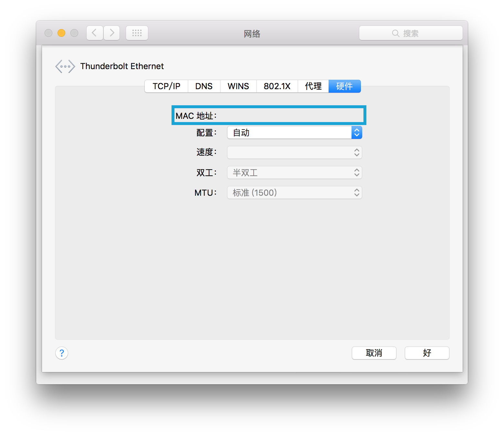

获取你 PC 的 MAC 地址
按 Win + R 打开"运行"窗口.
键入"cmd"并按 Enter。

你应该会看到黑色的命令提示符窗口。
按 Win + R 打开"运行"窗口.
键入"cmd"并按 Enter。
你应该会看到黑色的命令提示符窗口。
在命令提示符窗口中键入 getmac /v，然后按 Enter。它应该返回你的网络适配器列表。
Microsoft Windows [版本 10.0.10525] (c) 2015 Microsoft Corporation. All rights reserved. C:\Users\admin>getmac /v 连接名 网络适配器 物理地址 传输名称 =============== =============== =================== ========================================================== 以太网 Intel(R) PRO/10 00-1C-42-XX-XX-XX \Device\Tcpip_{5EB740D5-76B4-46D7-A93B-XXXXXXXXXXXX} C:\Users\admin>_
如图所示，在列表中，找到"Ethernet"或"以太网"或"乙太網絡"，其"物理地址"下的字符串是你的 MAC 地址。请把它记下来并检查一遍!
打开终端（Terminal）。
键入 ifconfig 并按 Enter。
user@computer:~$ ifconfig eth0 Link encap:Ethernet HWaddr 00:1c:42:xx:xx:xx inet addr:10.111.111.111 Bcast:10.111.111.255 Mask:255.255.255.0 inet6 addr: fdb2:2c26:f4e4:0:xxxx:xxxx:xxxx:xxxx/64 Scope:Global inet6 addr: fdb2:2c26:f4e4:0:xxxx:xxxx:xxxx:xxxx/64 Scope:Global inet6 addr: fe80::21c:42ff:fe07:f6f8/64 Scope:Link UP BROADCAST RUNNING MULTICAST MTU:1000 Metric:1 RX packets:100 errors:0 dropped:0 overruns:0 frame:0 TX packets:101 errors:0 dropped:0 overruns:0 carrier:0 collisions:0 txqueuelen:1000 RX bytes:9314 (9.3 KB) TX bytes:15671 (15.6 KB) lo Link encap:Local Loopback inet addr:127.0.0.1 Mask:255.0.0.0 inet6 addr: ::1/128 Scope:Host UP LOOPBACK RUNNING MTU:65536 Metric:1 RX packets:100 errors:0 dropped:0 overruns:0 frame:0 TX packets:100 errors:0 dropped:0 overruns:0 carrier:0 collisions:0 txqueuelen:0 RX bytes:24050 (24.0 KB) TX bytes:24050 (24.0 KB) user@computer:~$
如图所示，你的以太网 MAC 地址应该是在"eth**"一项中，"HWaddr"的后面。请把它记下来并检查一遍!
看来，你的 Mac 设备没有以太网端口，需要一个适配器（即转接线）。推荐你从 苹果在线商店购买一个 Thunderbolt to Gigabit Ethernet Adapter，或者去又一城直接购买。
或如果你有新的 MacBook，你需要一个苹果 USB 以太网适配器和 USB C 到 USB 适配器，带来不便。在这种情况下，我建议你在你的房间里安装 Wi-Fi。
打开系统偏好设置

选择"互联网"

插上你的外接 Thunderbolt 或 USB 以太网适配器，然后你的适配器应该会出现在左侧列表中。选择它。
从在左侧的列表中选择你的以太网适配器（Ethernet Adapter）。
按右下角"高级..."按钮。
在"硬件"选项卡中，你可以看到你的 MAC 地址。请把它记下来并检查一遍!
在城大校内找到有 Wi-Fi 的地方（通常 Common Room 即可）。打开NCM网站 ( https://www6.cityu.edu.hk/ncm/) 并用城大EID和密码登录。

在左边的菜单中选择"Connection in Residence"。

网站应该要求你同意其条款。如果你已阅读并同意，打勾并继续。
此时窗口右面应该有表单。

请确认你 "Residence Location" 和 "Contact Phone Number" 是正确的。
在 "Network Card Address" 中，填写刚才查到的 MAC 地址并 仔细检查。
| *Network Card Address: | - - - - - |
在 "Network Card Ownership" 部分中，选择"Self-Owned"。
| *Network Card Ownership: |
在 "Outlet ID" 部分中，选择你的床是在左边还是右边。
| * Outlet ID: |

在"Machine Type"部分中，选择"PC"。
| *Machine Type: |
在 "OS Type" 部分中，选择 随便哪个 都不会影响申请联网。但为了方便，建议你选择和你操作系统类型相同的" WINDOWS XP 7 WINDOWS 8 WINDOWS 10 WINDOWS MAC OS LINUX "。
在"Version"中，可以随便填写，并没有影响。例如，"10"。
| * OS Type: | Version |
"Remarks" 留空即可。
| Remarks: |
确认填写了所有带星号的项目并准确无误后，点击提交表单。
你将收到电子邮件，表示城大已收到你的申请。你需要等待即可，一般不超过几小时。
如果你没有网线，可以考虑从好味厨买一根。
如果你的书桌上有电话，请连接网线的一头到电话背面（确认电话和墙上的网线接口已经接好）。如果不是电话一侧，直接把网线一头插在墙上的网线接口。
将网线的另一头插入到你的 Thunderbolt 或 USB 转接线上，并连接转接线。
网线的另一边插入到你计算机的网线接口。

几小时后可以测试连接。
如果你有任何问题，请检查故障诊断页面。